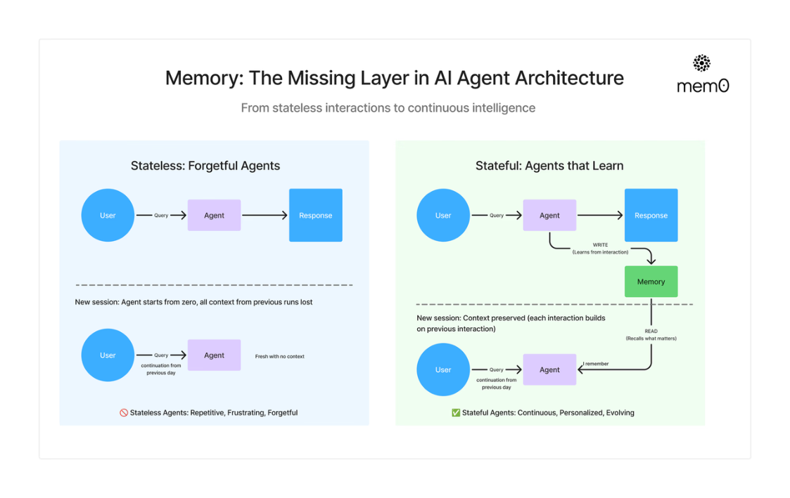
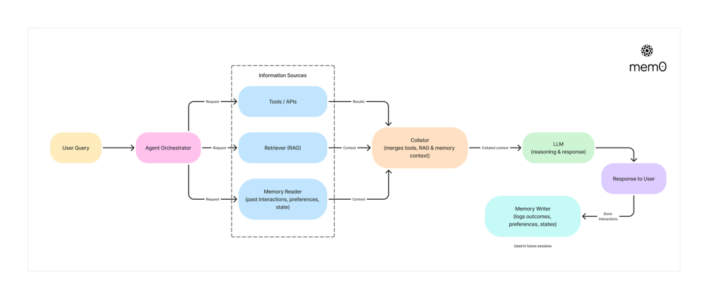
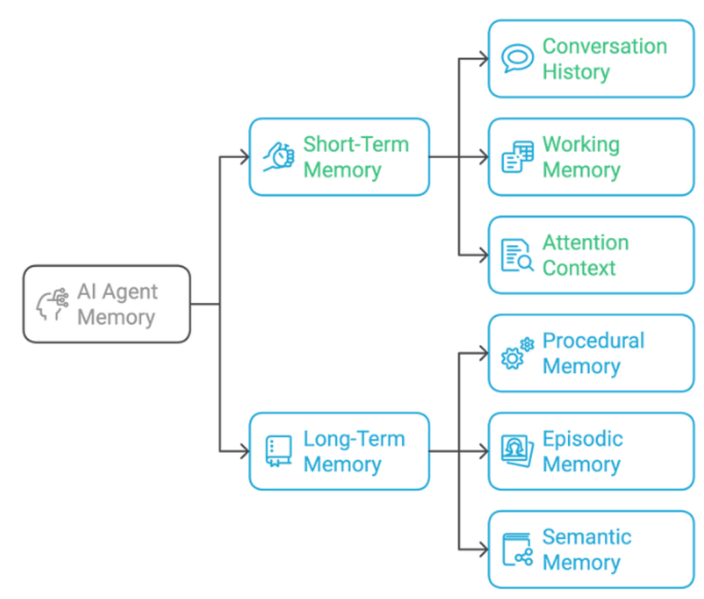
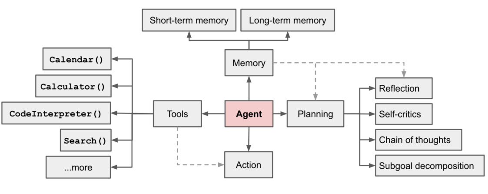

为什么 Agent 需要 Memory
在传统的大语言模型应用中，模型通常是无状态（Stateless）的。也就是说，每一次请求都是一次独 立的推理过程，模型只能依赖当前输入的 Prompt 与上下文信息进行回答，而无法真正记住过去发生 的事情。当对话结束或者上下文被截断时，模型之前获得的信息就会完全丢失。

然而，当我们开始构建 AI Agent 系统 时，这种无状态的能力就会迅速成为限制。Agent 的目标不再只 是回答问题，而是能够持续执行任务、与用户长期交互，并逐步积累知识和经验。在这种情况下，如 果 Agent 没有记忆能力，它就会表现得像一个每次见面都重新认识你的助手，无法理解历史对话、无 法记住用户偏好，也无法基于过去的经验进行决策。 因此，Memory（记忆系统）成为 Agent 架构中的核心组件之一。

从系统能力角度来看，Memory 至少解决了三个关键问题。
首先是持续对话能力（Persistent Conversation）。
在真实场景中，用户与 Agent 的交互往往是连续的。例如在智能客服、个人助理、医疗问诊或项目协 作等场景中，用户会在多轮对话中逐渐补充信息。如果 Agent 无法记住之前的对话内容，就会频繁重 复询问用户信息，严重影响体验。通过引入记忆系统，Agent 可以保存历史对话，并在后续推理过程 中重新利用这些信息，从而实现真正的多轮对话能力。
其次是个性化能力（Personalization）。 一个真正智能的 Agent 应当逐渐了解用户。例如用户的偏好、工作习惯、常见需求以及历史行为等。 如果这些信息能够被系统长期存储，并在未来的任务中被检索出来，Agent 就可以逐渐形成对用户的 理解。例如：
-
记住用户常用的语言风格
-
记住用户的工作领域
-
记住用户历史任务记录
这样一来，Agent 在生成回答或执行任务时就能够更加精准和个性化，而不再是一个通用的问答系 统。
第三个重要作用是任务连续性（Task Continuity）。 在复杂任务中，一个 Agent 往往需要分多步完成目标，例如：
用户目标
→ 任务规划
→ 工具调用
→ 结果反馈
→ 再次推理
在这种多阶段流程中，Agent 需要记住之前的推理结果、工具调用记录以及任务状态。如果没有 Memory，Agent 在每一步都会丢失之前的信息，整个任务流程就无法顺利推进。
除了以上三个核心能力之外，Memory 还能够帮助 Agent 减少上下文长度压力（Context Pressure）。 大语言模型通常存在上下文窗口（Context Window）的限制，如果简单地把所有历史对话都放入 Prompt 中，很快就会超过模型的最大 Token 限制，同时推理成本也会急剧增加。通过设计合理的记 忆系统，可以将历史信息存储在外部系统中，只在需要时进行检索，从而有效控制上下文规模。

-
从系统架构角度来看，Agent 的 Memory 通常分为两个层级： • 短期记忆（Short-term Memory）：用于保存当前对话或任务上下文
-
• 长期记忆（Long-term Memory）：用于保存长期知识、用户信息和历史经验

短期记忆主要帮助 Agent 保持对当前任务的理解，而长期记忆则让 Agent 具备类似经验积累的能力。 因此，在现代 AI Agent 架构中，Memory 已经不再是一个可选组件，而是与 LLM、Tool、Planning 并列的核心能力模块。一个没有记忆能力的 Agent，本质上仍然只是一个简单的语言模型接口；而一 个拥有完善 Memory 系统的 Agent，才真正具备持续学习和长期协作的能力。